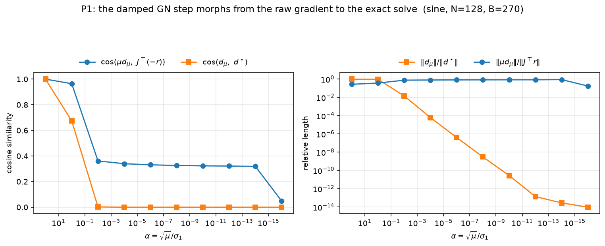
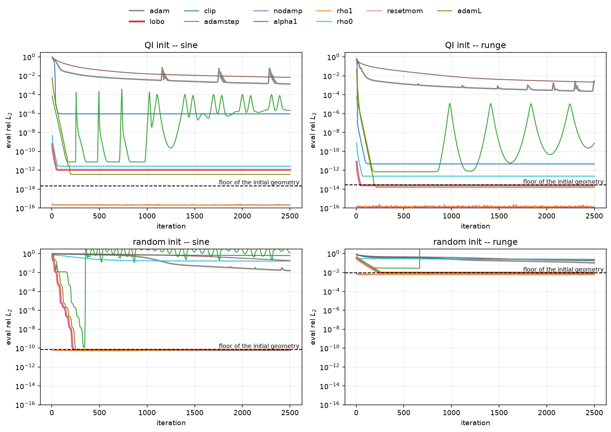
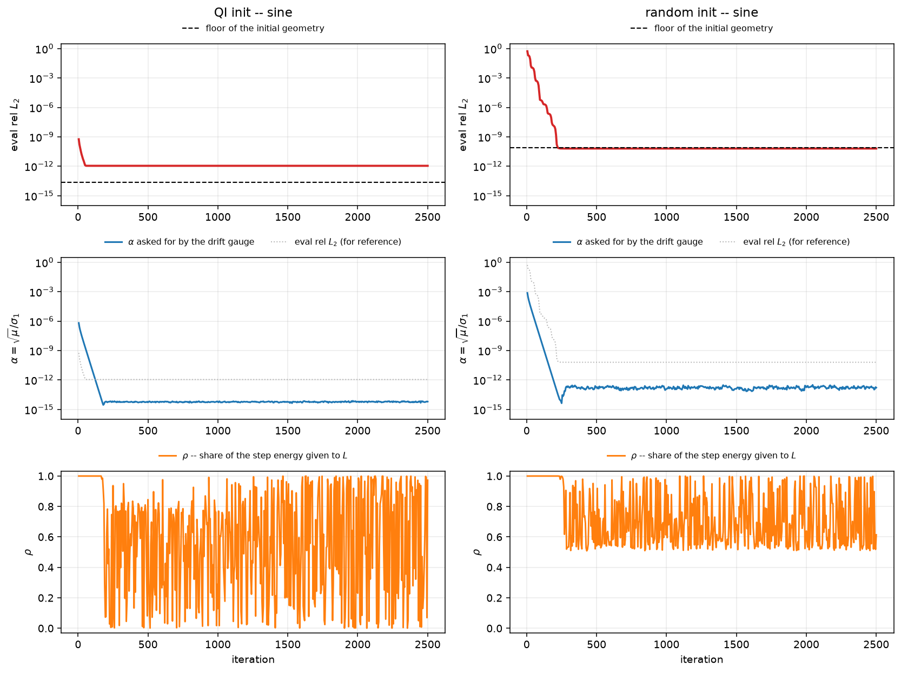
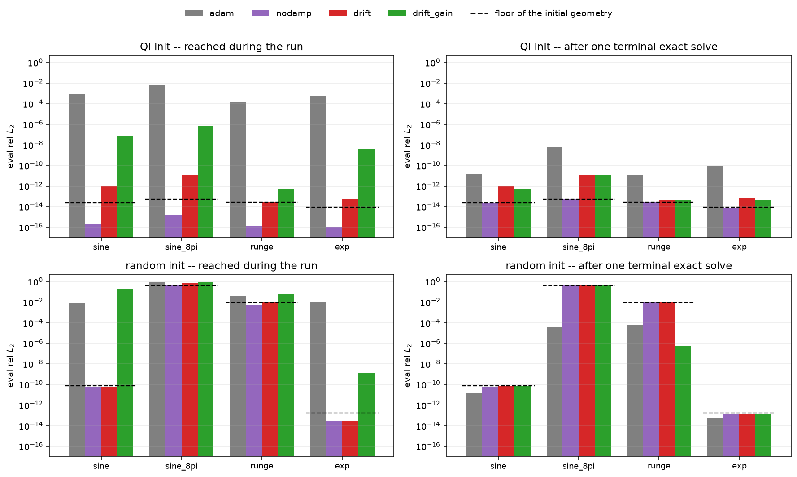
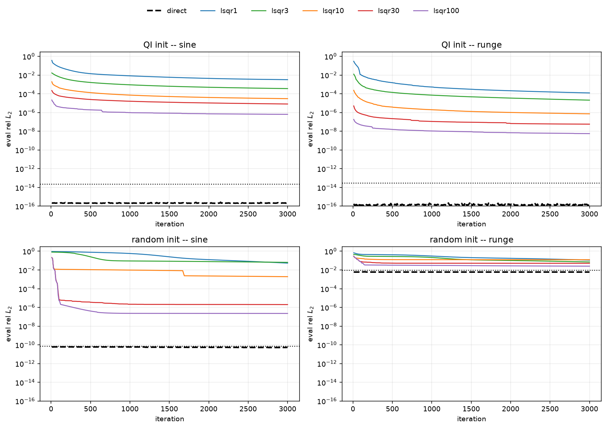
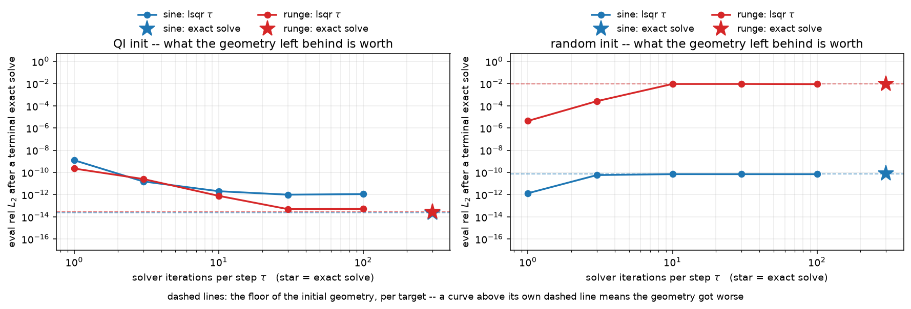
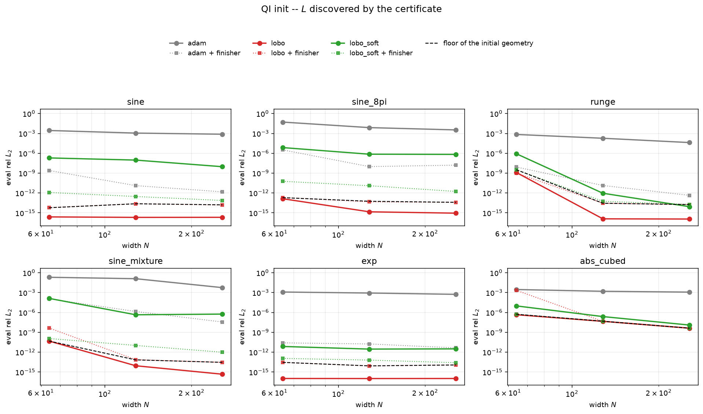
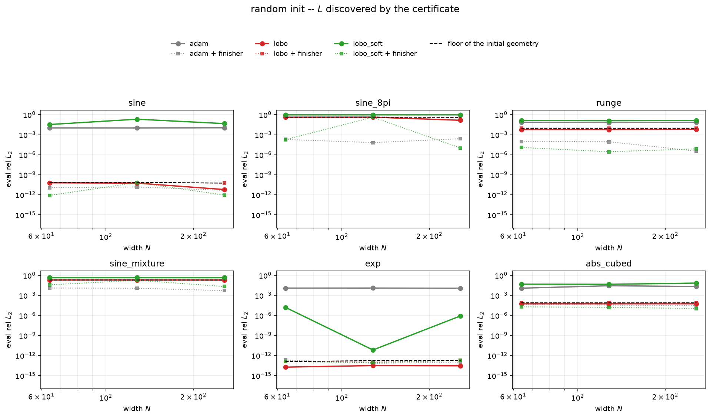

expD14 · iteration 0 · checkpoint D
Everything that was implemented, from the notation up — every symbol, every constant, every knob, and what each experiment actually measured.
The three-step program from motivation.md: step 1 is a general optimizer (Adam). Step 2 is an iterative least-squares solver that scales like Adam — $O(d)$ memory, one forward-backward per iteration, batch-robust. Step 3 is the assembly: lobotomize Adam and stitch the solver in, so that every iteration updates every parameter — some governed by modified Adam, some by least-squares updates.
This document is iteration 0 of step 3. The thing it has to beat is not just Adam; it is Adam followed by one least-squares refit at the end, which is expD02's winner and the obvious cheap baseline.
One hidden layer, $\tanh$, scalar in and scalar out:
$$f(x;\theta) \;=\; \sum_{k=1}^{W} v_k \tanh(w_k x + b_k) \;+\; c_0 .$$The parameter vector is the four groups concatenated, and this flat layout is what every index below refers to:
$$\theta \;=\; (\,\underbrace{w_1..w_W}_{\text{slopes}}\;|\;\underbrace{b_1..b_W}_{\text{offsets}}\;|\;\underbrace{v_1..v_W}_{\text{readout}}\;|\;c_0\,)\;\in\;\mathbb R^{m},\qquad m=3W+1 .$$Unit $k$ is a smooth step centred at $x=-b_k/w_k$ with sharpness $w_k$. So $(w,b)$ is the geometry — where the steps are and how sharp — and $(v,c_0)$ is the readout — how much of each to add up.
$n=2003$ equispaced training points on $[-1,1]$, targets $y_i=f^\star(x_i)$ with no noise. Residual, loss, and the gradient Adam actually receives:
$$r(\theta)\in\mathbb R^{n},\quad r_i=f(x_i;\theta)-y_i,\qquad \mathcal L=\tfrac1n\|r\|_2^2,\qquad g=\nabla_\theta\mathcal L=\tfrac2n J^{\!\top} r,$$where $J=\partial f/\partial\theta\in\mathbb R^{n\times m}$ is the Jacobian of the predictions (not of the loss). Everything is reported as eval relative $L_2$ on a disjoint 4001-point grid:
$$\text{rel }L_2=\frac{\big\|f(\tilde x;\theta)-f^\star(\tilde x)\big\|_2}{\|f^\star(\tilde x)\|_2}.$$Reporting on a held-out grid matters: an error of $10^{-16}$ there is the rounding floor of evaluating the model, not a fit statistic.
| name | what it is | why it is in the study |
|---|---|---|
qi |
The QI construction in affine coordinates. Grid spacing $h=2/N$, centres $c_j=-1+jh$ for $j\in[-\text{halo},N+\text{halo}]$, bandwidth $\gamma=\lambda/h$ with $\lambda=0.25$; then $w_k=\gamma$, $b_k=-\gamma c_k$, and the readout is set to exactly zero. Width is $W=N+2\,\text{halo}+1$, so $W>N$. | The geometry is already the right one. This isolates "can the optimizer exploit and preserve a good geometry". |
rand |
PyTorch's stock nn.Linear initialisation: $w,b\sim U(-1,1)$ (fan-in 1), $v\sim U(-1/\sqrt W,1/\sqrt W)$, $c_0=0$. |
The geometry has to be learned. This is the case the success criterion actually asks about. |
Note the zero readout in qi is not cosmetic — it makes every geometry gradient exactly zero at step 0, because $\partial f/\partial b_k = v_k(1-t_k^2)$ carries a factor $v_k$. That fact shows up twice below, in the certificate and in the drift gauge.
Differentiate $f$ twice with respect to each kind of parameter, writing $t_k=\tanh(w_kx+b_k)$:
$$\frac{\partial^2 f}{\partial v_k^2}=0,\qquad \frac{\partial^2 f}{\partial c_0^2}=0,$$ $$\frac{\partial^2 f}{\partial b_k^2}=-2v_k\,t_k(1-t_k^2),\qquad \frac{\partial^2 f}{\partial w_k^2}=-2v_k\,x^2\,t_k(1-t_k^2).$$The readout second derivatives are exactly zero — not small. So $f$ is an exactly linear function of $(v,c_0)$, and the sub-problem of choosing them is a linear least-squares problem, solvable in closed form to machine precision. The geometry second derivatives are not zero, and no closed form exists for them.
Note also that the geometry curvature is proportional to $v_k$. With a zero readout the network is momentarily flat in the geometry too — which would fool any single-point curvature test.
The optimizer is not told which parameters are linear; it measures it. Two tests, both required.
For each coordinate $i$, with $s_i=\max(|\theta_i|,1)$ and $\varepsilon_i=10^{-3}s_i$:
$$q_i=\frac{\big\|f(\theta+\varepsilon_i e_i)-2f(\theta)+f(\theta-\varepsilon_i e_i)\big\|_2}{\varepsilon_i^{2}}\,s_i^{2}\;\approx\;s_i^2\left\|\frac{\partial^2 f}{\partial\theta_i^2}\right\|_2 .$$Read it as how much curvature does the model show when this parameter moves by a fixed fraction of its own size. The $s_i^2$ makes it comparable across parameters of wildly different magnitude ($w_k\approx N/8$ can be in the hundreds while $v_k$ is order one). Three forward passes per coordinate; no derivatives, no knowledge of the architecture.
Two corrections, both load-bearing:
Then $\hat q_i=q_i/\max_j q_j$, dimensionless in $[0,1]$.
A tiny gradient means two opposite things: already optimal, or invisible to the data. The halo units sit outside the data range, so $|w_kx+b_k|>20$ everywhere, $\tanh$ saturates and $1-t_k^2$ underflows to exactly zero in fp64. Those parameters are perfectly linear and perfectly useless. The test needs no threshold because the separation is absolute:
$$\text{informed}_i \iff \text{info}_i>0,\qquad \text{info}_i=\hat v_i\ \ \text{(Adam's second moment, already stored)}.$$Removal is not freezing — a removed parameter simply goes back to being Adam's. $A$ is the complement of $L$.
The dense probe costs $2(2m{+}1)$ forward passes, so it cannot run often. At every 200-step boundary the residual drift over the window is compared to $10\epsilon_{\text{mach}}\|y\|$; only if the model actually moved does it re-probe, and the interval doubles (capped at 8 windows) each time membership comes back unchanged. On these runs that means 2–3 probes per 3000 steps.
At $N{=}256$ it admits $B=583$ coordinates against a 462-coordinate readout — the readout plus a tail of geometry units that saturated during training (Adam's second moment is an EMA decaying at $0.999$, so it remembers gradients from before a unit went dark). A third guard catches those at solve time: any Jacobian column with norm below $10^{-8}$ of the largest is dropped. Measured gap: live columns $O(1)$, blind columns $\le10^{-14}$. All 121 extras are dropped; the block that does arithmetic is the readout.
This reproduces iteration 11's numbers exactly, which is the cross-check that the certificate was ported faithfully.
Restricted to $L$, the model is exactly linear, so the change in predictions from a change $\delta$ is exactly $J_L\delta$. The step solves a damped version of that least-squares problem:
$$d_\mu \;=\; \arg\min_{\delta}\ \|J_L\delta + r\|_2^2 + \mu\|\delta\|_2^2 \;=\;\big(J_L^{\!\top}J_L+\mu I\big)^{-1}J_L^{\!\top}(-r).$$$\mu$ is parameterised through a dimensionless $\alpha$, because $\alpha$ is exactly the inverse effective condition number and therefore transfers across matrices:
$$\mu=(\alpha\,\sigma_1)^2,\qquad \alpha=\frac{\sqrt\mu}{\sigma_1},\qquad \sigma_1=\sigma_{\max}(J_L).$$$\sigma_1$ comes from three power iterations on $J_L^{\!\top}J_L$, refreshed on the certificate cadence, carrying one $O(d)$ vector. Measured accuracy: within $0.25\%$ of the SVD.
And the practical consequence, also measured in T1 and worth memorising:
$$\boxed{\ \text{eval rel }L_2 \;\approx\; 0.3\,\alpha\ }\qquad\text{over ten decades of }\alpha.$$$\alpha$ is not an abstract regularisation dial. It is the accuracy you are choosing to bank this step.
Adam's moments are updated on all $m$ coordinates every step, whether or not that coordinate spends any energy. That is deliberate: a parameter that crosses $A\!\leftrightarrow\!L$ never meets a cold optimizer, so the handoff needs no special case.
$$\hat m,\hat v \ \text{as usual};\qquad \Delta^{\text{Adam}} = -\,\text{lr}\cdot\frac{\hat m}{\sqrt{\hat v}+\epsilon}.$$Restrict to $A$, and split into a direction and a length: $p_A = \Delta^{\text{Adam}}_A/\|\Delta^{\text{Adam}}_A\|$.
The replacement is the exact-line-search length along Adam's own direction:
$$t^\star_A=\frac{-\,r\cdot J p_A}{\|Jp_A\|^2},\qquad \ell_A=\min\big(\|\Delta^{\text{Adam}}_A\|,\ \max(t^\star_A,0)\big).$$Two things make this the right object. It is linear in the residual, so it vanishes as the problem is solved — exactly the settling behaviour iteration 11 asked for. And it costs nothing extra: the JVP $Jp_A$ is already being computed for the energy allocation below. The $\min$ keeps it never longer than Adam would have gone, so it can only be more conservative.
For any unit direction $p$, the decrease in $\|r\|^2$ achievable by an exact line search along it is
$$\text{gain}(p)=\frac{(r\cdot Jp)^2}{\|Jp\|^2}.$$One JVP per direction. Compute it for $p_A$ and for $p_L=d_\mu/\|d_\mu\|$, and allocate the energy in proportion:
$$\rho=\frac{\text{gain}_L}{\text{gain}_A+\text{gain}_L}\in[0,1].$$The budget itself is measured, not set: $E=\|\Delta^{\text{Adam}}\|$, the norm of the step stock Adam would have taken over all $m$ coordinates this step. Then
$$\Delta_A=(1-\rho)\,\ell_A\,p_A,\qquad \Delta_L=\begin{cases} d_\mu & \text{(clip off)}\\[2pt] \min(\|d_\mu\|,\ \rho E)\,p_L & \text{(clip on)}\end{cases}$$An earlier version gave $A$ a step of norm $(1-\rho)E$ in the direction $p_A$. That is not Adam even at $\rho=0$, because $\|\Delta^{\text{Adam}}\|\ne \text{lr}\sqrt m$ in general. Scaling Adam's actual step instead makes the reduction exact: with $L$ empty and $\rho=0$, the optimizer reproduces stock Adam to $8\times10^{-17}$ relative in $\theta$ after 50 steps. That exact-reduction property is the reliability floor the whole program is graded against, so it is worth getting bit-exact.
| mode | rule | the idea |
|---|---|---|
fixed | $\alpha$ pinned | Control. $\alpha=10^{-15}$ is "solve as hard as fp64 allows"; $\alpha=1$ is "barely solve at all". |
drift |
$\alpha=\mathrm{EMA}\big(\|J\Delta_A\|/\|y\|\big)$, bias-corrected | Never resolve below the scale your own features are moving at — expD13's matching rule. The $A$ step moves the predictions by $J\Delta_A$, so that norm is the geometry's uncertainty in residual units. |
drift_gain |
$\alpha=\max\big(\text{drift},\ \sqrt{1-\rho}\big)$ | Never resolve $L$ below the part of the error $A$ can still remove. Gains are quadratic in the residual and $\text{gain}_A/(\text{gain}_A{+}\text{gain}_L)=1-\rho$, so $\sqrt{1-\rho}$ is that level in residual units — the same units the $0.3\alpha$ law lives in. |
The EMA is bias-corrected exactly the way Adam corrects its moments. Without that, the gauge spends $\sim1/(1-\beta)$ steps decaying from its initial value instead of reading the measurement — which on QI init is most of the run. With it, step 1 on QI init reads $\alpha=10^{-15}$ immediately (zero readout $\Rightarrow$ zero geometry gradient $\Rightarrow$ zero $A$ step $\Rightarrow$ zero drift), while random init reads $\alpha\approx3\times10^{-3}$. That is the behaviour you predicted, and it falls out of the measurement rather than being scheduled.
$\alpha$ is clipped to $[10^{-15},\,1]$ throughout. Neither rule contains a fitted constant.
state: theta, Adam moments (m, v), membership mask L, power vector for sigma_1
-- all O(d). No block preconditioner anywhere: scalar (Adam-diagonal) only.
L <- certify(theta) # probe + observability
for it = 1, 2, 3, ...:
r, g <- fused forward+backward at theta # 2 passes
m,v <- Adam moments on ALL m coordinates # free
step <- -lr * mhat / (sqrt(vhat) + 1e-8)
# ---- the A direction ----
stepA <- step restricted to A ; pA <- unit(stepA)
# ---- the L step ----
if it == 1 or (it-1) % 200 == 0:
sigma_1 <- 3 power iterations on J_L^T J_L # 6 passes, amortised
alpha <- fixed | drift | max(drift, sqrt(1-rho))
mu <- (alpha * sigma_1)^2
d_mu <- solve min ||J_L d + r||^2 + mu||d||^2 # 2*tau passes (lsqr)
pL <- unit(d_mu)
# ---- allocation and line search: 2 JVPs, shared ----
jA <- J pA ; gainA <- (r.jA)^2/||jA||^2 ; tstarA <- -(r.jA)/||jA||^2
jL <- J pL ; gainL <- (r.jL)^2/||jL||^2
rho <- gainL / (gainA + gainL)
# ---- the split step ----
E <- ||step|| # measured Adam energy
lenA <- min(||stepA||, max(tstarA, 0)) # the line search
theta <- theta + (1-rho)*lenA*pA + d_mu
# ---- gauges ----
drift <- biasEMA( ||J((1-rho)*lenA*pA)|| / ||y|| ) # 1 pass -> next alpha
every 200 steps: if the residual moved, re-probe L # with 2x backoff
There is no schedule, no trust region in the shipped configuration, no mode switch, and no control decision that compares two loss values. NaN is the only reject.
lsqr — the shipped path | direct — the reference | |
|---|---|---|
| what it does | Matrix-free damped LSQR. $J_Lz$ is one JVP, $J_L^{\!\top}u$ is one VJP, both restricted to the mask. $\tau$ iterations per step, restarted from scratch on a fresh residual, Fong-Saunders stopping with $\epsilon$-scaled tolerances. Damping applied implicitly through the operator, never by stacking an identity. | Materialise $J_L$, take its SVD, apply $\sigma/(\sigma^2+\mu)$ with truncation at rcond, plus the column-norm observability filter. |
| state | $O(d)$ — Adam's class | $O(nB)$ — a measurement instrument, not a candidate |
| cost/step | $2\tau$ passes | $B$ pass-equivalents |
| role | The honest, deployable version. | Separates "is the control logic right?" from "can the cheap solver keep up?" — so T2/T2b/T4 judge the allocation without the solver's limits in the way. |
The reference arm gets its Jacobian columns from a one-pass analytic formula rather than a loop of $B$ JVPs, because a per-column JVP loop costs $|L|$ passes per step and is unaffordable at 3000 steps. The analytic version was verified against the blind JVP construction to a max relative difference of $1\times10^{-17}$, so it is arithmetically the same matrix — but it means the reference arm's wall-clock is not that of an architecture-blind implementation. The shipped lsqr path never touches it.
| symbol / name | value | what it is and why that value |
|---|---|---|
N_TRAIN, N_EVAL | 2003, 4001 | Train and eval grid sizes. Coprime-ish and disjoint so eval is genuinely held out. |
$\lambda$ (LAM) | 0.25 | Bandwidth parameter of the QI geometry, $\gamma=\lambda/h$. The repo's measured optimum (expC03 basin). |
RCOND | $10^{-15}$ | Singular-value truncation in every direct solve. Repo standard. |
| $\epsilon_{\text{mach}}$ | $2.22\times10^{-16}$ | fp64 unit roundoff. Used to scale the probe noise guard and the drift gate. |
Q_ENTER / Q_EXIT | $10^{-8}$ / $10^{-7}$ | Certificate admit / demote on $\hat q$. A deadband so membership cannot chatter. The measured probe separation is 9–12 orders, so anything in $10^{-6}..10^{-10}$ gives the same answer — not a delicate constant. |
COL_FLOOR | $10^{-8}$ | Drop a Jacobian column below this fraction of the largest. Measured gap is live $O(1)$ vs blind $\le10^{-14}$, so it sits in a wide valley. |
PROBE_EPS | $10^{-3}$ | Relative step of the second-difference probe. Sets the noise floor $\propto1/\text{PROBE\_EPS}^2$. |
ALPHA_MIN / ALPHA_MAX | $10^{-15}$ / $1$ | Clip on the damping. The floor matches RCOND; below it the solve is undamped anyway. |
| lr | $10^{-3}$ | Adam's learning rate, unchanged from the rest of the campaign. |
| $\beta_1,\beta_2,\epsilon$ | 0.9, 0.999, $10^{-8}$ | Stock Adam. |
alpha_ema | 0.9 | Smoothing of the drift gauge, bias-corrected. |
refresh | 200 | Boundary for the $\sigma_1$ refresh and the gated re-probe. Matches iteration 11's cadence. |
train_lobo)| knob | options | meaning |
|---|---|---|
lset | none · readout · certificate | How $L$ is chosen. none is stock Adam; readout is the oracle; certificate discovers it. |
lsolver | lsqr · direct | The two solvers above. |
tau | 1, 3, 10, 30, 100 | LSQR iterations per step. |
alpha_mode | fixed · drift · drift_gain | The damping rule. |
rho_mode | gain · fixed | Energy allocation: measured, or pinned. |
astep | adam · linesearch | $A$'s step length. |
clip | on / off | The trust region on $\Delta_L$. |
adam_on_L | on / off | Whether Adam also steps the certified block (iteration 11 did). |
reset_moments | on / off | Zero Adam's moments on $L$ after a solve. |
Every run reports two numbers, and the second one is what makes the negative result visible at all.
| metric | definition | the question it answers |
|---|---|---|
| reached | best eval rel $L_2$ over the trajectory | Did the readout get solved? |
geometry floorfloor_final | truncated-SVD solve on the geometry the run finished with | Did the geometry get learned? This is exactly the error one terminal exact solve would give, so it also scores every arm "with a finisher". |
The reference point floor0 is the same quantity evaluated at $\theta_0$: the best any readout-only method could do without moving the geometry at all. A run whose geometry floor equals its floor0 did not improve its features, no matter how good its error looks.
Five checks before anything was assembled. All pass against the final code.
| check | result |
|---|---|
| $\mu d_\mu \to$ raw gradient as $\mu\to\infty$ | cos $=1-8\times10^{-11}$, length ratio $0.99998$ ✓ |
| $d_\mu \to$ exact solve as $\mu\to0$ | reaches $9.5\times10^{-15}$ vs floor $2.3\times10^{-14}$ ✓ |
| matrix-free LSQR $=$ direct damped solve | $10^{-13}$ agreement where it converges ✓ |
| $\sigma_1$ by 3 power iterations | within $0.25\%$ of the SVD ✓ |
| gain estimator $=$ actual line-search decrease | ratio $1.00000$ ($L$ dir), $0.989$ (random) ✓ |
lset=none reproduces stock Adam | $7.9\times10^{-17}$ relative in $\theta$ after 50 steps ✓ |

Ten arms, one ablation each, everything else held at the proposal. $N{=}128$, 2500 steps, oracle $L$, direct solve — so the allocation logic is the only thing under test.
| arm | qi/sine | qi/runge | rand/sine | rand/runge |
|---|---|---|---|---|
| stock Adam | $8.6\times10^{-4}$ | $2.3\times10^{-4}$ | $1.6\times10^{-2}$ | $1.0\times10^{-1}$ |
| undamped, $\rho$ allocated | $2.0\times10^{-16}$ | $1.2\times10^{-16}$ | $5.7\times10^{-11}$ | $5.8\times10^{-3}$ |
| drift-matched $\mu$ | $1.1\times10^{-12}$ | $2.5\times10^{-14}$ | $6.4\times10^{-11}$ | $9.5\times10^{-3}$ |
| trust-region clip on | $9.3\times10^{-7}$ | $4.7\times10^{-12}$ | $6.2\times10^{-1}$ | $2.4\times10^{-1}$ |
| Adam's own step length | $7.7\times10^{-12}$ | $7.0\times10^{-13}$ | $1.1\times10^{-10}$ | $2.8\times10^{-2}$ |
| $\alpha$ pinned at 1 | $6.8\times10^{-3}$ | $2.2\times10^{-3}$ | $1.8\times10^{-1}$ | $1.7\times10^{-1}$ |
| $\rho=0$ (no allocation) | $2.7\times10^{-12}$ | $2.4\times10^{-13}$ | $1.6\times10^{-1}$ | $2.1\times10^{-1}$ |
Both of my step-size protections are costs, not protections, and for the same reason: they exist to stop you banking accuracy you cannot keep, and when you re-solve every single step there is nothing to keep — you just re-solve. reset_moments changed nothing to three digits. adam_on_L was neutral to mildly positive.
The "Adam's own step length" row hides its real failure behind a best column. Its final errors are $2.2\times10^{-6}$, $7.5\times10^{-10}$, $1.26$ and $3.2\times10^{2}$ — it oscillates and then diverges. The line search is what removes that.


sine): the error, then $\alpha$ as the drift gauge asks for it with the error overlaid dotted for scale, then $\rho$. Two things to look for: $\alpha$ tracking the error curve about two decades below it — the gauge is measuring the right thing — and $\rho$ chattering across the full $[0,1]$ range once converged. That chatter is the allocator reading rounding noise once both gains bottom out. Harmless here, but it is why the rule needs a floor.Four arms × 2 inits × 4 targets, 4000 steps, scoring both metrics. This is where the real obstacle shows up.
sine_8pi, plain Adam improves the geometry from $0.43$ to $4.3\times10^{-5}$ — four orders — while every hard-solving arm leaves it at $0.43$.
drift_gain is the one arm that breaks the loop by deliberately under-solving. On runge it leaves a geometry worth $5.8\times10^{-7}$ — $16000\times$ better than the one it started with, and $100\times$ better than Adam's. It does not work on sine_8pi. And because it under-solves, its reached error is poor; it is only a win if a finisher cashes the geometry in.

sine_8pi and runge, while the solving arms barely move — their bars were already sitting on their own geometry's floor.Swap the reference solve for the matrix-free LSQR, hold everything else. $N{=}128$, 3000 steps.
| arm | passes/step | qi/sine reached | geometry left | rand/runge reached | geometry left |
|---|---|---|---|---|---|
| direct (reference) | 274 | $2.0\times10^{-16}$ | $2.3\times10^{-14}$ | $5.9\times10^{-3}$ | $9.4\times10^{-3}$ |
| lsqr $\tau{=}1$ | 7 | $3.2\times10^{-3}$ | $1.2\times10^{-9}$ | $1.1\times10^{-1}$ | $4.4\times10^{-6}$ |
| lsqr $\tau{=}3$ | 11 | $3.6\times10^{-4}$ | $1.5\times10^{-11}$ | $7.1\times10^{-2}$ | $2.6\times10^{-4}$ |
| lsqr $\tau{=}30$ | 65 | $8.2\times10^{-6}$ | $9.8\times10^{-13}$ | $5.2\times10^{-2}$ | $9.3\times10^{-3}$ |
As an error-reducer the $O(d)$ path is ten orders short of the reference on QI init. Carrying the warm start in $\theta$ across steps does not rescue a short-recurrence Krylov solve on a gapless spectrum, so expD11's wall stands. Sweeping $\alpha$ at fixed $\tau$ changes almost nothing ($8.9$, $8.7$, $8.7\times10^{-6}$ across four decades), which confirms it is the iteration budget, not the damping, doing the work here.
runge the geometry left behind is worth $4.4\times10^{-6}$: $2000\times$ better than the exact solve's, at $1/40$ of its passes. So the two under-solving mechanisms — damping and a truncated iterative solver — produce the same effect, and the cheap one produces it for free. The $O(d)$ solver's weakness as a solver is exactly the under-solving that feature learning needs.


6 targets × 3 widths × 2 inits × 3 arms, 3000 steps, with $L$ discovered by the certificate rather than handed over.
| target | $N{=}64$ | 128 | 256 | floor 64 | floor 128 | floor 256 |
|---|---|---|---|---|---|---|
sine | $2.4\times10^{-16}$ | $2.0\times10^{-16}$ | $2.1\times10^{-16}$ | $5.7\times10^{-15}$ | $2.3\times10^{-14}$ | $1.6\times10^{-14}$ |
sine_8pi | $1.3\times10^{-13}$ | $1.4\times10^{-15}$ | $8.7\times10^{-16}$ | $1.9\times10^{-13}$ | $5.5\times10^{-14}$ | $3.8\times10^{-14}$ |
runge | $1.3\times10^{-9}$ | $1.2\times10^{-16}$ | $1.1\times10^{-16}$ | $3.3\times10^{-9}$ | $2.8\times10^{-14}$ | $1.7\times10^{-14}$ |
sine_mixture | $4.7\times10^{-11}$ | $8.7\times10^{-15}$ | $4.6\times10^{-16}$ | $4.7\times10^{-11}$ | $6.8\times10^{-14}$ | $2.8\times10^{-14}$ |
exp | $1.0\times10^{-16}$ | $1.0\times10^{-16}$ | $1.0\times10^{-16}$ | $2.8\times10^{-14}$ | $8.3\times10^{-15}$ | $1.1\times10^{-14}$ |
abs_cubed | $4.6\times10^{-7}$ | $4.5\times10^{-8}$ | $4.2\times10^{-9}$ | $5.3\times10^{-7}$ | $4.7\times10^{-8}$ | $4.2\times10^{-9}$ |
All 18 cells land at or below the frozen-geometry floor, and 10 sit at $\sim10^{-16}$ — the rounding floor of evaluating the model on a held-out grid, i.e. every digit fp64 has. Stock Adam on the same cells ranges from $4\times10^{-5}$ to $2\times10^{-1}$, so the margin is 8 to 13 orders. abs_cubed is the control: it is only twice differentiable, its own floor is $10^{-7}$–$10^{-9}$, and the optimizer sits exactly on it at every width rather than overfitting past it.
The only fair column, because as-is every arm is pinned at its own geometry's floor.
| target | Adam + finisher | lobo + finisher | lobo_soft + finisher |
|---|---|---|---|
sine ($N{=}256$) | $4.6\times10^{-12}$ | $5.6\times10^{-11}$ | $9.0\times10^{-13}$ |
sine_8pi ($N{=}256$) | $2.5\times10^{-4}$ | $4.2\times10^{-1}$ | $1.0\times10^{-5}$ |
runge ($N{=}128$) | $8.9\times10^{-5}$ | $9.4\times10^{-3}$ | $2.8\times10^{-6}$ |
sine_mixture ($N{=}256$) | $5.3\times10^{-3}$ | $2.1\times10^{-1}$ | $2.2\times10^{-2}$ |
exp ($N{=}256$) | $1.0\times10^{-13}$ | $1.9\times10^{-13}$ | $1.9\times10^{-13}$ |
abs_cubed ($N{=}256$) | $2.8\times10^{-5}$ | $7.7\times10^{-5}$ | $1.1\times10^{-5}$ |
The hard-solving arm never improves the geometry — its finisher column equals its floor0 column to two digits, in all 18 cells. The under-solving arm beats Adam-plus-finisher on four of six targets by $13\times$ to $32\times$. But it is not reliable: sine_8pi at $N{=}128$ returns $4.3\times10^{-1}$ — a total failure — sitting between $1.8\times10^{-4}$ at $N{=}64$ and $1.0\times10^{-5}$ at $N{=}256$. A rule that swings six orders on a width change is a rule that is not yet right.

sine and exp.
| mechanism | verdict | evidence |
|---|---|---|
| Single measured energy budget $E=\|\Delta^{\text{Adam}}\|$, split by $\rho$ | KEPT | $\rho=0$ fails on random init ($1.6\times10^{-1}$ vs $5.7\times10^{-11}$). Exact reduction to Adam when $L$ is empty. |
| Exact-line-search length on $A$ | KEPT — load-bearing | Without it three of four cells end the run diverging, final error up to $3.2\times10^{2}$. Costs nothing: the JVP is already computed for $\rho$. |
| Adam moments on all coordinates | KEPT | Makes the $A\!\leftrightarrow\!L$ handoff a non-event. reset_moments changes nothing. |
| The certificate (probe + observability + column filter) | KEPT | Finds the readout blind; reproduces iteration 11's $B$ counts exactly; the column filter drops all 121 late admissions. |
| Trust-region clip on $\Delta_L$ | CUT | Costs 5–8 orders. The damping already sets the step length. |
| Drift-matched damping as staleness insurance | CUT (repurposed) | Costs 4 orders at every-step cadence. $\mu$'s real job is solver tractability and deliberate under-solving, not staleness. |
drift_gain is my attempt to measure that quantity; it demonstrably works on some targets and fails badly on others, so the mechanism is real and the rule is not.sine_8pi bistable across widths under drift_gain — is $\sqrt{1-\rho}$ latching, or is it the target?floor_final is a truncated-SVD solve, so it is a proxy for a finisher, not a measured finisher run.| item | passes |
|---|---|
| fused forward + backward (residual and gradient) | 2 |
| LSQR at $\tau$ iterations (one JVP + one VJP each) | $2\tau$ |
| the two gain JVPs (which also give the line search) | 2 |
| the drift gauge JVP | 1 |
| $\sigma_1$ power iteration, amortised over 200 steps | 0.03 |
| total at $\tau=1$ / $\tau=3$ | 7 / 11 |
$\theta$, Adam's two moments, the membership mask, and one power-iteration vector. All $O(d)$ — Adam's own class. No block preconditioner, no stored Krylov basis, no per-sample cache. The reference direct arm materialises $J_L$ and is explicitly a measurement instrument, not a candidate.
experiments/expD14_lobotomy/iteration_0/
core0.py the optimizer, the case builder, the certificate, the solvers
t1_pieces.py T1 -- the five piece checks
t2_assembly.py T2 -- the 10-arm ablation
t2b_alpha.py T2b -- the damping rules, both metrics
t3_solver.py T3 -- direct vs matrix-free LSQR
t4_grid.py T4 -- the headline grid, certificate-discovered L
figs0.py every figure on this page
results/checkpoint_D_optimizers/expD14_lobotomy/iteration_0/
iteration_0_results.md the writeup (this page is its long-form companion)
t{2,2b,3,4}*.jsonl every run, with full trajectories
figures/ the PNGs embedded above
Everything runs in fp64 via uv run --extra dev python …. results/ is gitignored except *_results.md, so this page and the figures are local artefacts, not tracked ones.